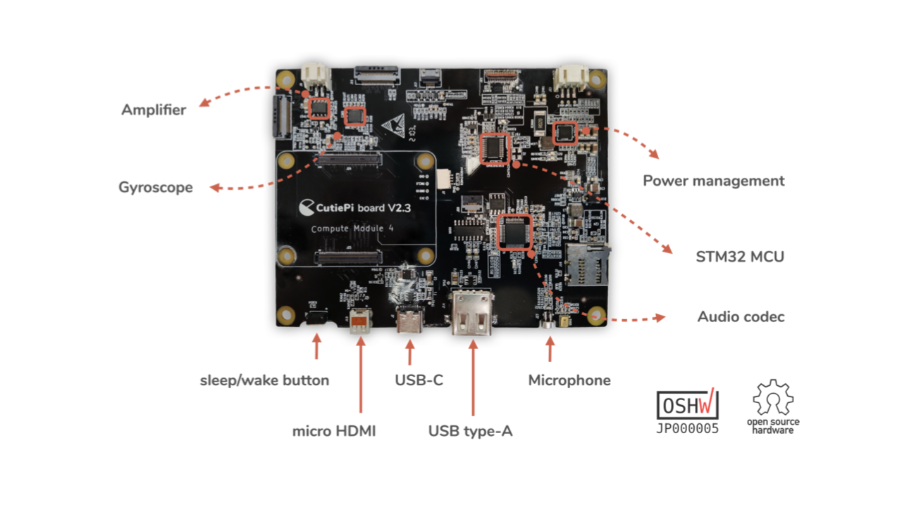
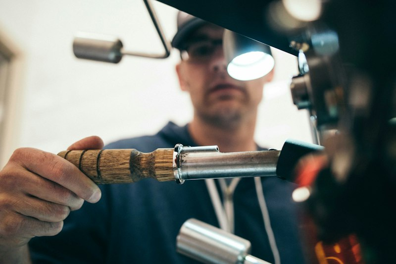
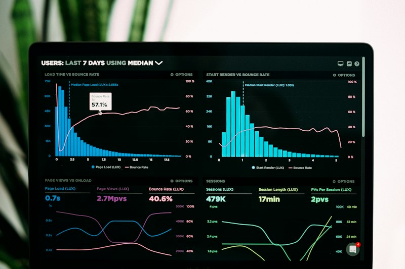

My First Raspberry Pi: A Solution Looking for a Problem
About five or six years ago, I bought my first Raspberry Pi.
Why? Well, I didn't really have a reason.
I'd been hearing quite a bit about Raspberry Pi and how this tiny computer could be used for practically anything. Being a tech enthusiast, I was curious to see what all the excitement was about.
So I ordered one.
A few days later, this tiny computer arrived at my doorstep, and I was quite excited to get started.
There was just one problem.
I had absolutely no idea what I was going to do with it.
I connected it to a monitor, installed Ubuntu and experimented with a couple of other operating systems available for Raspberry Pi. I used it like a miniature desktop computer, explored its capabilities, and generally played around with it.
And once I'd satisfied my curiosity, I switched it off.
Into the drawer it went.
I don't even remember what eventually happened to that Raspberry Pi. I might have given it to one of my students, or perhaps it's still sitting in a drawer somewhere.
Either way, that was the end of my first Raspberry Pi adventure.
At least until I discovered CutiePi.
Enter CutiePi: A Raspberry Pi With a Screen!
A few years later, I came across an advertisement for CutiePi on one of the Telegram channels I followed.
For those unfamiliar with it, CutiePi is a Raspberry Pi-based tablet. Instead of buying a Raspberry Pi and connecting it to an external monitor, keyboard, and other accessories, you get a compact, portable device with its own touchscreen.
And it looks cute! The name pretty much justifies the product.
Since I'd already experimented with Raspberry Pi, I was curious to see how a tablet version would work.
This time, there was another advantage. CutiePi came with its own operating system and applications preinstalled. I didn't have to spend time figuring out which operating system to install or getting the basic hardware working.
I could simply turn it on and start using it.
So I ordered one.
Of course, I still didn't have a particularly good use case in mind.
Apparently, I hadn't learned much from my first Raspberry Pi purchase!
Project 1: A Digital Photo Album for My Daughter
When CutiePi arrived, my first impression was that it looked like a small tablet PC.
And that gave me an idea.
My daughter had recently been born, and like most new parents, we had accumulated a ridiculous number of photographs. Every smile, every funny expression, every little milestone — everything had been captured.
Most of these photographs were simply sitting on our phones or in digital storage.
Why not put them on CutiePi and turn it into a digital photo frame?
So that's exactly what I did.
I transferred my daughter's photographs to the device, configured a slideshow, and left it running.
Suddenly, CutiePi had a purpose!
It became a continuously running digital photo album in our home. Whenever friends or relatives visited, they could see photographs of our daughter scrolling across the screen.
It was particularly nice because those memories were no longer hidden away in a photo gallery that we rarely opened. They were right there in front of us, throughout the day.
And the slideshow kept running, 24 hours a day, seven days a week.
Four Years Later, She Loves It Even More
My daughter is now four years old, and she absolutely loves watching that slideshow.
She'll sit in front of CutiePi and watch photographs of herself as a baby. All those little memories that we captured when she was born are now something she gets to experience herself.
It's quite funny watching her react to her own baby photographs.
What started as a simple Raspberry Pi experiment has become a little window into her childhood.
And of all the things I've done with this device, this is probably my favorite.
But being a tech enthusiast, I couldn't possibly leave a perfectly capable computer running just a photo slideshow forever.
Surely, it could do something more!
Project 2: Pi-hole — Getting Rid of Advertisements Across My Home Network

My next experiment was Pi-hole.
Pi-hole is an open-source, network-wide advertisement blocker. Instead of installing an ad-blocking extension on every browser or device, you can configure Pi-hole as the DNS server for your home network.
Whenever a device tries to resolve a domain name, Pi-hole checks whether that domain is on its blocklists. If it's associated with advertising or tracking, Pi-hole blocks the request.
The nice thing about this approach is that it works across multiple devices on the same network. Phones, laptops, tablets, smart TVs, and other devices can all benefit from it without needing individual ad-blocking extensions.
Of course, it doesn't block every advertisement. YouTube advertisements, for example, are a different challenge because of how YouTube delivers its content.
But for a lot of everyday browsing, Pi-hole can make a noticeable difference.
And since CutiePi is essentially a Raspberry Pi running Linux, I could install Pi-hole using Docker and have it run in the background.
Now my little photo album was doing two jobs simultaneously.
It displayed photographs of my daughter while quietly blocking unwanted advertising across my home network.
Not bad for a device that I'd initially purchased just because it looked cute!
Project 3: Monitoring My Home Internet With Speedtest Tracker and Grafana

The third use case came from a problem I occasionally faced at home.
My internet connection would sometimes go down, and if I wasn't at home, I wouldn't necessarily know when it happened or how long it had been unavailable.
And when you're running your own home infrastructure, having visibility into your internet connection is quite useful.
I wanted to know how my connection was performing over time, whether there were frequent interruptions, and whether I was actually getting the speeds I was paying for.
So I installed Speedtest Tracker on CutiePi.
It periodically runs internet speed tests and records the results, allowing me to track download speeds, upload speeds, and latency.
But simply collecting data wasn't enough. I wanted a dashboard.
And that meant Grafana!
I configured Grafana to visualize the monitoring data, giving me a dashboard to check how my home internet was performing.
Now, instead of relying on the occasional manual speed test, I could look at historical data and identify patterns.
- Was my internet connection slowing down at particular times of the day?
- Were there periods when speed tests failed?
- Was the connection performing consistently?
All useful information, especially when troubleshooting internet issues.
One important distinction: a failed speed test doesn't always mean the internet was down. It could also indicate a problem with the test server or the monitoring device itself. But keeping historical records still makes troubleshooting considerably easier.
And just like that, CutiePi had become my little home network monitoring station.
One Device, Three Completely Different Jobs
| Use Case | What It Does |
|---|---|
| Digital photo album | 24/7 slideshow of my daughter's childhood photos |
| Pi-hole | Network-wide DNS filtering to block ads and trackers |
| Speedtest Tracker + Grafana | Internet performance monitoring with historical dashboards |
What's interesting is that these three applications serve completely different purposes.
One is personal, one improves the experience of using the internet at home, and the third helps me monitor my network.
And they're all running on the same little device.
Why I Haven't Upgraded It
My CutiePi is an older model, and its hardware is fairly limited by today's standards.
I have no intention of overwhelming it with additional applications or turning it into a miniature production server.
I've also come across information about newer CutiePi hardware and upgrade options. It's tempting to explore those, particularly because upgrading a Raspberry Pi-based device can open up new possibilities.
But I haven't seriously considered upgrading mine yet.
Why? Because everything is working!
The photo album runs, Pi-hole does its job, and my internet monitoring dashboard gives me the information I need.
I've spent enough time working with servers and infrastructure to appreciate the value of leaving a stable system alone.
There's always another service to install, another container to deploy, or another dashboard to configure. But at some point, you have to ask yourself whether you actually need any of it.
In this case, I don't.
My little CutiePi has found its purpose, and I'm quite happy with what it's doing.
A Small Project I'd Recommend Exploring
One of the things I like about Raspberry Pi projects is that you don't necessarily need a complicated use case to get started.
My first Raspberry Pi ended up in a drawer because I purchased it without knowing what I wanted to do with it.
CutiePi could easily have suffered the same fate.
Instead, I started with something incredibly simple: displaying photographs. That gave the device a reason to stay switched on. Once it was already running, adding a few lightweight background services made sense.
If you're interested in experimenting with Raspberry Pi, a digital photo album, Pi-hole, or a basic network monitoring dashboard are all interesting projects to explore. You don't necessarily need a CutiePi either — an ordinary Raspberry Pi can handle similar tasks with the appropriate hardware.
And if you have children at home, turning an old Raspberry Pi into a digital photo album might be one of the simplest and most enjoyable projects you can build.
The Best Part Has Nothing to Do With Technology
After all the experimentation with Docker, Pi-hole, speed tests, and Grafana, the most satisfying part of this project is still the original photo album.
My daughter is four now.
She occasionally sits in front of CutiePi, watching photographs of herself from when she was just a baby. Memories that she was too young to remember are now right there on a little screen, continuously scrolling in front of her.
And every time I see her enjoying those photographs, I'm reminded that sometimes the simplest application of technology is also the most meaningful.
I bought CutiePi because I was curious about Raspberry Pi. I kept it running because it became part of our home.
And as long as it's doing these three jobs without complaining, I have absolutely no intention of touching it.
After all, if it ain't broke, don't fix it!